This page serves as a detailed record of the experiments conducted during the development of SODA. Unlike the main paper which focuses on the final validated recipe and key findings, this log documents the journey, including design choices that were explored but discarded, detailed ablation studies, and technical nuances of the large-scale training process.
Across our experiments, we use a consistent audio tokenization strategy based on the Mimi audio codec.
We start with the Marin tokenizer (which is the Llama3 tokenizer) and extend it with audio tokens and special tokens. The final tokenizer is available at soda-research/marin-mimi-bpe-8cb-16k-tokenizer and is used across all SODA experiments (except Qwen3 warm-start runs, which require a Qwen3-based tokenizer).
Token Composition:
<|text_start|>, <|text_end|>, <|audio_start|>, <|audio_end|>)Decision on BPE Merges: We initially explored whether BPE merges for audio tokens could improve efficiency, hypothesizing that recurring audio patterns might benefit from subword tokenization. However, experiments up to 128K merges (i.e., the audio tokens would be 128K tokens) yielded only ~10% token reduction—insufficient efficiency gain to justify the cost of learning significantly more tokens. We therefore opted for 0 merges, keeping the audio vocabulary as direct codebook indices.
Note on Implementation: We map discrete audio token indices (0–16383) to Unicode characters in the Private Use Area (offset 0xE000),
so each audio token becomes a single character. This allows us to treat interleaved audio-text sequences as plain strings,
enabling use of existing Marin LLM infrastructure and efficient storage.
See our tokenizer for usage.
Audio Example:
Audio string: (corresponding to the audio above) using the Mimi tokenizer with 8 codebooks:
See
encode (wav to string) and
decode (string to wav)
𐰆𑂠ﳉ𐨫𐰆𑌹𑤠ﷀ𐙆𑂨𑿟燎𑖍𑩇ﾊ𐽸𑖲𑤱ﲑ𑆨ﭹ𐔅𐢍𑀪量𐏈，𑨙ﳊ𐓱𐹺𑇁𑌹ﲑ𑫐ﱒ𐒈𐡺𑴑濾𐅂אָ𐜧𐳋𑁳︤𐚽𐾱𑂠𑿟﵄𐄋𐰆ﯥ𐳅𑃦﹩𐍢𐦫𐙜𑍇𑿠離𐛌𐴑𑶕𐤬𑶅濫𐰆諸𐇡𐰆𑊚濫𐛈𐰆𑊚杻𐄗𑘩𑲙UNICODE_OFFSET: int = 0xE000
NUM_CODEBOOKS: int = 8
CODEBOOK_SIZE: int = 2048
def codes_to_chars(
codes: Union[List[List[int]], np.ndarray, torch.Tensor],
codebook_size: int,
copy_before_conversion: bool = True,
unicode_offset: int = UNICODE_OFFSET,
) -> str:
if isinstance(codes, list):
codes = np.array(codes)
copy_before_conversion = False
elif isinstance(codes, torch.Tensor):
codes = codes.cpu().numpy()
if len(codes.shape) != 2:
raise ValueError("codes must be a 2D array of shape (num_codebooks, seq_length).")
if copy_before_conversion:
codes = codes.copy()
for i in range(codes.shape[0]):
codes[i] += unicode_offset + i*codebook_size
codes = codes.T.reshape(-1)
chars = "".join([chr(c) for c in codes])
return chars
def audio_to_str(audio_numpy: np.ndarray, mimi_model: MimiModel, device: str) -> str:
audio_tensor = torch.tensor(audio_numpy).to(device).unsqueeze(0)
if len(audio_tensor.shape) == 2:
audio_tensor = audio_tensor.unsqueeze(1)
with torch.no_grad():
audio_codes = mimi_model.encode(audio_tensor)
codes = audio_codes[0][0].cpu()
codes = codes[:NUM_CODEBOOKS, :]
audio_str = codes_to_chars(codes, codebook_size=CODEBOOK_SIZE)
return audio_strUNICODE_OFFSET: int = 0xE000
NUM_CODEBOOKS: int = 8
CODEBOOK_SIZE: int = 2048
def chars_to_codes(
chars: str,
num_codebooks: int,
codebook_size: int,
return_tensors: Optional[str] = None,
unicode_offset: int = UNICODE_OFFSET,
) -> Union[List[List[int]], np.ndarray, torch.Tensor]:
codes = np.array([ord(c) for c in chars])
codes = codes.reshape(-1, num_codebooks).T
for i in range(codes.shape[0]):
codes[i] -= unicode_offset + i*codebook_size
if return_tensors is None:
codes = codes.tolist()
elif return_tensors == "pt":
codes = torch.tensor(codes)
return codes
def str_to_audio(audio_str: str, mimi_model: MimiModel, device: str) -> np.ndarray:
codes = chars_to_codes(
audio_str, num_codebooks=NUM_CODEBOOKS, codebook_size=CODEBOOK_SIZE, return_tensors="pt"
)
codes = codes.to(device).unsqueeze(0)
with torch.no_grad():
audio_decoded = mimi_model.decode(codes).audio_values[0]
return audio_decoded.cpu().numpy()| Dataset | Split | Type | Hours | ~Tokens | Source |
|---|---|---|---|---|---|
| Yodas | English | Speech + Transcript | 164K | ~131B† | YouTube (100+ langs) |
| Emilia | English+Yodas-English | Speech + Transcript | 139K | ~110B† | YouTube (6 langs) |
| MLS | English | Speech + Transcript | 44.5K | ~35B† | LibriVox audiobooks |
| Nemotron-CC | HQ-Actual | Text | — | ~220B* | Web (CC filtered) |
Hours and tokens are for English subsets used in our experiments.
Token counts assume 100 tokens/sec for audio (8 Mimi codebooks at 12.5 Hz) and standard BPE tokenization for text.
*Estimated from disk size.
†Token counts include both audio-first and text-first formats (unrepeated token counts would be half).
Note: We provide processed speech data (discrete audio in interleaved sequence format) via the HuggingFace links above.
For Yodas and Emilia, we release all languages in addition to the English subsets used in our main experiments.
We select the largest publicly available speech corpora with utterance-level transcriptions:
To improve semantic understanding and world knowledge, we incorporate high-quality text-only data:
Based on our design choice investigations (see Annealing and Nemotron Mixture), we use the following sampling weights for the IsoFLOP analysis and large-scale SODA training: 5% text (Nemotron) and 95% speech (Yodas + Emilia). Within the speech portion, we sample proportionally to dataset size, resulting in 51.6% Yodas English, 28.8% Emilia-YODAS English, and 14.6% Emilia English. Since pre-training uses standard instance sampling and packing, these ratios closely reflect the actual token distribution during training.
Goal: To test if pre-training on sequences with interleaved discrete text and audio tokens will result in a model that can perform reasonable audio tasks (e.g., ASR, zero-shot TTS, speech/audio continuation).
Model Configuration:
Link: WandB Log
The training loss was stable throughout. We evaluated the final checkpoint on a suite of speech and text tasks.
Notably, this preliminary model (SODA-prelim) shows strong acoustic performance but struggles with semantic understanding.
| Model | Salmon (Acc) | sWUGGY (Acc) | sBLIMP (Acc) | MMLU (Acc) | ASR (WER↓) | TTS (WER↓) | TTS (SIM↑) |
|---|---|---|---|---|---|---|---|
| SpritLM-base-7B | 57.2 | 69.0 | 58.3 | 36.9 | 21.9 | ~4x.x | ~0.05 |
| SpritLM-Expr-7B | 67.1 | 65.0 | 54.2 | ? | 37.9 | ~5x.x | ~0.10 |
| Llama-Mimi-1.3B | 73.6 | 68.7 | 54.3 | ∅ | ∅ | ∅ | ∅ |
| Llama-Mimi-8B | 73.2 | 68.8 | 55.1 | ∅ | ∅ | ∅ | ∅ |
| SODA-prelim (0.6B) | 69.4 | 57.8 | 50.9 | 25.0 | 15.2 | 9.2 | 0.516 |
SpiritLM TTS estimated from reported results on another dataset. ∅ indicates no skills. ASR: LibriSpeech (test-clean), TTS: seed-tts-eval.
MMLU Score: We observed a low MMLU score of 25.0%. Initially, this raised questions, but further analysis suggests this is expected behavior for this scale. A 0.6B model trained primarily on noisy transcripts (where text density is low, ~3 tokens/sec vs 100 audio tokens/sec) effectively has very little "textbook quality" data exposure. In other LLM pre-training, even 1B pure text models often hover around 25% on MMLU (barely clearing random chance). Consequently, we will drop MMLU from subsequent experiments, and instead use HellaSwag for models in this regime.
Next Steps: The lack of semantic/text knowledge hurts emergent abilities. To address this, future experiments will prioritize:
Artifacts: The pre-trained weights for SODA-prelim on HF: soda-research/soda-600m-prelim.
With three large-scale open speech datasets available (Yodas, Emilia, MLS), we needed to determine the optimal data mixture. Running full-scale pre-training for each combination is prohibitively expensive.
Question: Can we use cheaper methods—specifically annealing (switching data during the learning rate decay phase) or small-scale proxies—to reliably predict the best data source?
We compared three English-only subsets using two efficient proxies:
| Experiment / Data | sWUGGY | sBLIMP | Salmon | tWUGGY | tBLIMP | ASR (WER↓) | TTS (WER↓) | TTS (SIM↑) |
|---|---|---|---|---|---|---|---|---|
| Baseline: SODA-prelim (Full Training) | ||||||||
| Yodas (multilingual) | 57.8 | 50.9 | 69.4 | 71.3 | 69.0 | 22.0 | 9.2 | 0.516 |
| Annealing (from SODA-prelim) | ||||||||
| MLS (English) | 56.8 | 50.6 | 70.3 | 69.1 | 72.2 | 92.6 | 35.7 | 0.366 |
| Emilia (English) | 58.5 | 51.0 | 69.8 | 58.5 | 70.5 | 7.8 | 6.1 | 0.557 |
| Yodas (English) | 57.8 | 51.0 | 69.8 | 73.8 | 68.6 | 18.8 | 12.4 | 0.502 |
| Small-Scale Scratch (150M, 10B tokens) | ||||||||
| MLS (English) | 54.9 | 49.7 | 69.5 | 57.2 | 65.6 | 105.6 | -- | -- |
| Emilia (English) | 55.8 | 49.4 | 67.9 | 48.6 | 67.1 | 26.8 | -- | -- |
| Yodas (English) | 54.9 | 49.6 | 69.4 | 64.9 | 60.9 | 54.1 | -- | -- |
1. MLS performs poorly: Despite being a curated audiobook dataset, MLS yielded catastrophic ASR performance (92.6% WER in annealing). We attribute this to (i) uncased, unpunctuated text creating a distribution mismatch, and (ii) fixed-length 10–20s chunks lacking diversity.
2. Emilia & Yodas are complementary: Emilia excels at TTS (6.1% WER), while Yodas provides better text knowledge (highest tWUGGY).
3. Small-scale runs are predictive: The 150M model runs showed the same trend as the expensive annealing runs (MLS performing poorly on ASR, Emilia/Yodas performing better). This validates using small-scale proxies for future data mixture experiments.
Decision: We will exclude MLS and use a mixture of Yodas + Emilia for the next phase.
SODA-prelim showed poor semantic understanding and general knowledge (25% MMLU, ~50% sBLIMP). Can we boost these capabilities by including high-quality text-only data (Nemotron) during pre-training, in addition to noisy speech transcripts? If so, what is the optimal text-to-speech ratio?
Since small-scale runs (150M, 10B tokens) yielded similar findings to expensive annealing in the previous experiment, we adopt the same setup for this text ratio sweep. We vary the Nemotron text ratio from 0% to 90%, where X% text means sampling X% tokens from Nemotron and (100−X)% from Yodas.
Link: WandB Log
Figure below shows the impact of adding Nemotron text data on NLL for audio and text validation data:
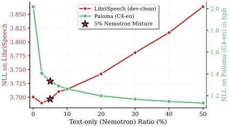
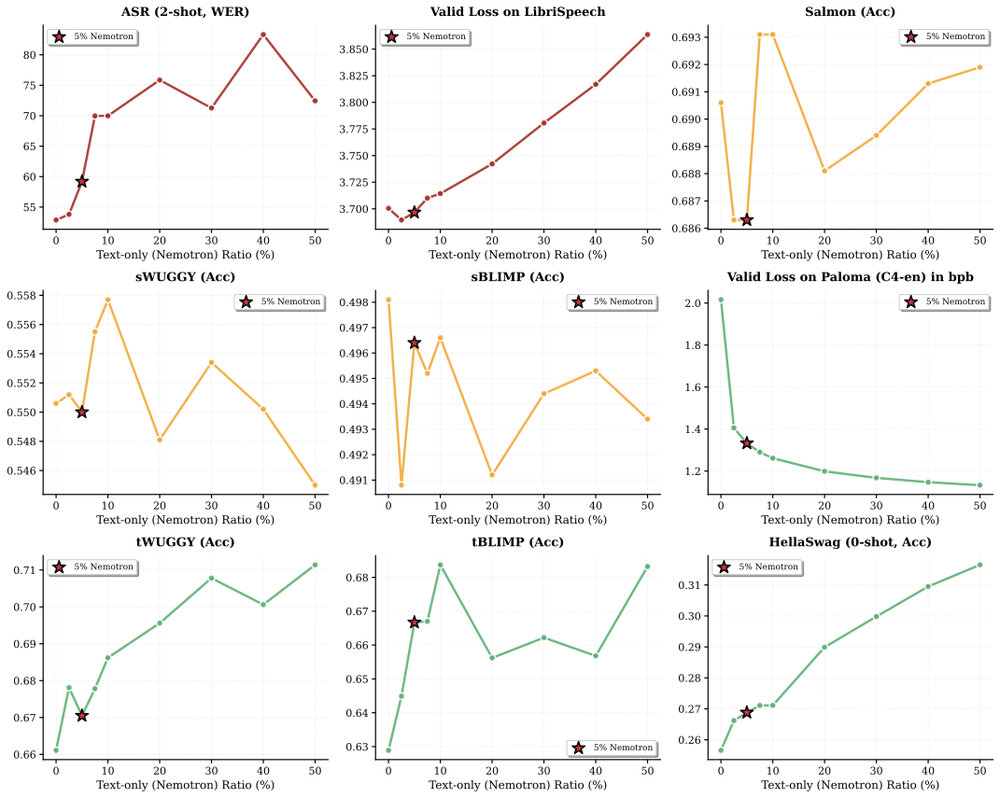
Decision: We fix the pre-training mixture to 5% Text (Nemotron) + 95% Speech (Yodas/Emilia) for all subsequent experiments.
We want to understand the impact of different token types on audio benchmarks. Specifically: what is the effect of (1) adding acoustic tokens to semantic tokens, and (2) interleaving text tokens alongside audio tokens?
We ablate three token configurations using a fixed budget of 3×1020 FLOPs (1.7B model, 30B tokens) with Yodas as speech data (no Nemotron):
| Tokens | Speech (Semantic) |
Speech (Acoustic) |
Text (Knowledge) |
Cross-Modal | |||
|---|---|---|---|---|---|---|---|
| sBLIMP↑ | sWUGGY↑ | Salmon↑ | tBLIMP↑ | tWUGGY↑ | ASRWER↓ | TTSWER↓ | |
| S | 58.6 | 72.1 | 67.3 | × | × | × | × |
| S+A | 50.9 | 59.0 | 70.1 | × | × | × | × |
| S+A+T | 50.4 | 58.1 | 70.4 | 67.8 | 71.6 | 18.3 | 27.1 |
S=Semantic, A=Acoustic, T=Text. × indicates the model lacks the capability to perform the task. Fixed budget: 3×1020 FLOPs (1.7B model, 30B tokens).
Decision: We adopt S+A+T (Semantic+Acoustic+Text) as our token composition, accepting the semantic trade-off for broader capabilities in a unified general-purpose backbone.
Scaling laws for text LLMs are well-studied (Kaplan et al., Chinchilla, Llama3, DeepSeek), yet no such analysis exists for discrete audio models. Since audio tokens are far more granular (~100 tokens/sec with 8-codebook Mimi) compared to text (~3–4 tokens/sec), the optimal allocation between model size and training data may differ significantly. We conduct the first scaling law study for discrete audio models to answer:
We conduct an IsoFLOP sweep training 64 models across seven compute budgets spanning two orders of magnitude from 3×1018 to 3×1020 FLOPs. For each compute budget C, we train models of varying sizes (77M to 4.2B parameters), adjusting the number of training tokens D to satisfy C ≈ 6ND. At each budget, we identify the configuration achieving the lowest validation loss, yielding optimal pairs (N*, D*).
The three panels below show: (a) validation NLL vs model size N, (b) validation NLL vs training tokens D, and (c) the fitted scaling laws with extrapolation.
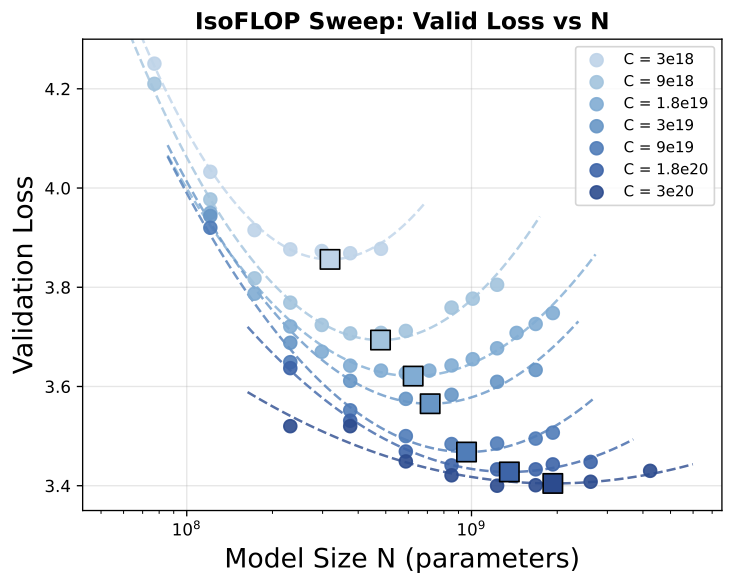
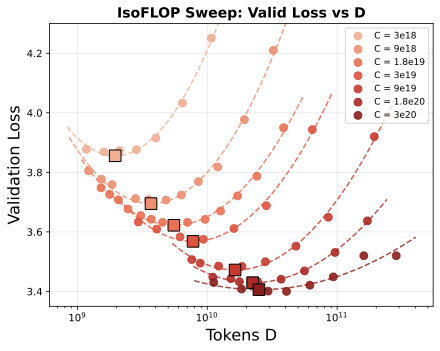
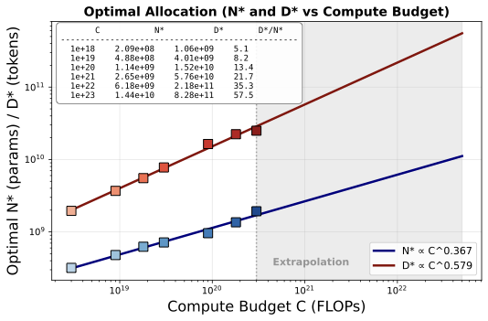
We fit power-laws N* = aN CbN and D* = aD CbD using log-linear regression to derive scaling laws for discrete audio:
An alternative approach fits a parametric equation L = E + A/Nα + B/Dβ on all data points and derives exponents as N* ∝ Cβ/(α+β) and D* ∝ Cα/(α+β). This yields similar findings:
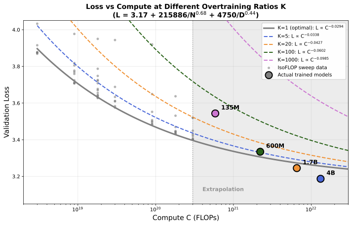
Before relying on validation loss (NLL) to guide scaling law analysis and future experiments, we need to verify: Is validation NLL a reliable proxy for downstream task performance in discrete audio models? If so, we can focus on minimizing NLL rather than running expensive downstream evaluations at every step.
We compute NLL on speech utterances from LibriSpeech dev-clean and analyze the correlation between NLL and downstream task performance across the 64 models from our IsoFLOP study (varying sizes and compute budgets).
Our interleaved format admits multiple ways to compute NLL. We compare six variants:
The figure below shows validation NLL (audio+text) versus downstream task performance. Circular points are the 64 IsoFLOP models; star-shaped points are the final SODA runs at larger scale. Regression lines are fitted on the 64 IsoFLOP models only.
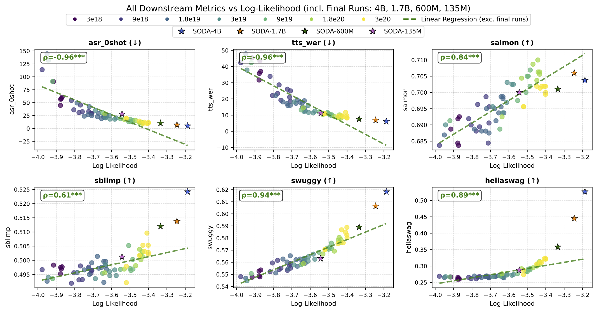
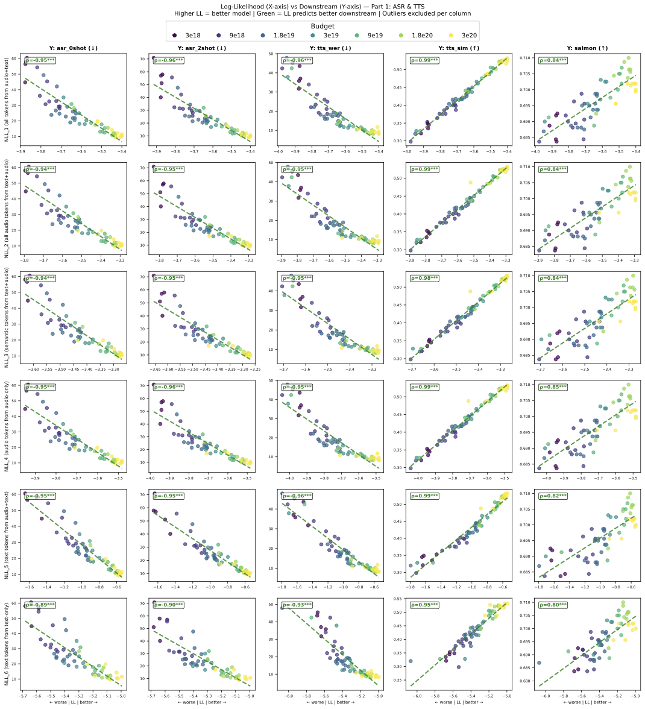
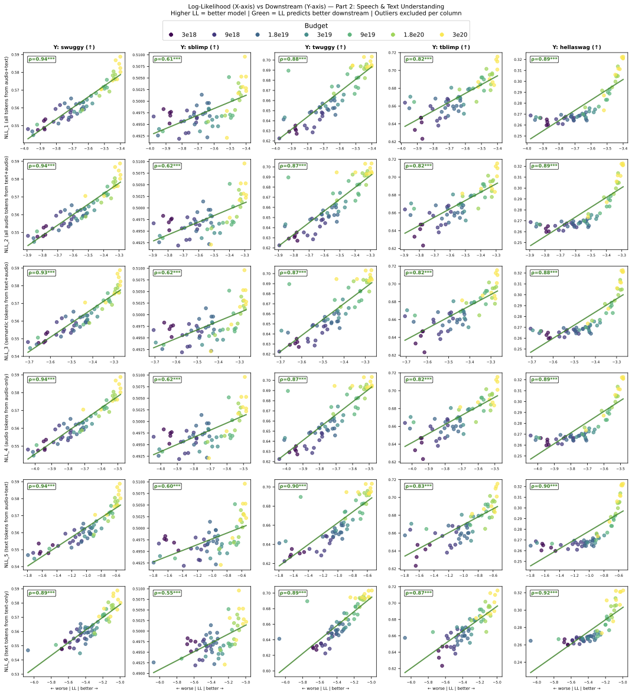
| NLL | ASR-0 | ASR-2 | TTS-W | TTS-S | Sal. | sWUG | sBLI | tWUG | tBLI | Hella | Avg-Sp | Avg-Tx |
|---|---|---|---|---|---|---|---|---|---|---|---|---|
| NLL_1 | 0.959 | 0.967 | 0.955 | 0.989 | 0.841 | 0.941 | 0.614 | 0.879 | 0.824 | 0.887 | 0.895 | 0.864 |
| NLL_2 | 0.956 | 0.962 | 0.953 | 0.986 | 0.842 | 0.936 | 0.621 | 0.874 | 0.821 | 0.887 | 0.894 | 0.861 |
| NLL_3 | 0.954 | 0.959 | 0.952 | 0.985 | 0.842 | 0.929 | 0.620 | 0.866 | 0.819 | 0.884 | 0.892 | 0.856 |
| NLL_4 | 0.959 | 0.965 | 0.952 | 0.987 | 0.845 | 0.937 | 0.623 | 0.871 | 0.819 | 0.886 | 0.896 | 0.859 |
| NLL_5 | 0.962 | 0.961 | 0.960 | 0.986 | 0.820 | 0.944 | 0.602 | 0.899 | 0.827 | 0.904 | 0.891 | 0.877 |
| NLL_6 | 0.903 | 0.908 | 0.933 | 0.949 | 0.802 | 0.892 | 0.552 | 0.891 | 0.873 | 0.917 | 0.848 | 0.894 |
Avg-Sp averages 7 speech metrics; Avg-Tx averages 3 text metrics. NLL_1 achieves the best balance between speech and text correlations.
This is the culmination of all previous experiments. Having established (1) the optimal speech data mixture (Yodas + Emilia), (2) the optimal text ratio (5% Nemotron), (3) scaling laws for discrete audio, and (4) NLL as a reliable proxy metric, we now scale up to train the final SODA (Scaling Open Discrete Audio) models ranging from 135M to 4B parameters. The key questions are:
Training data: Following our recipe — 5% Nemotron (text-only) + 43.4% Emilia + 51.6% Yodas2 (ratio between Emilia and Yodas determined by their respective sizes). This yields ~125B + 125B = 250B tokens of interleaved speech data (audio-first and text-first formats), for a total of 500B tokens (~4 epochs). Prior work shows repeated data remains effective up to 4 epochs for LLM pre-training.
Model sizes and over-training: We train models at 135M, 600M, 1.7B, and 4B parameters, all on 500B tokens. While our scaling laws define compute-optimal token counts, inference usage favors models trained beyond D* — especially given that our 100 tokens/sec rate can make larger models slow at inference.
| Model | Parameters | Tokens | Over-training factor | Comparable to |
|---|---|---|---|---|
| SODA-135M | 135M | 500B | ~940× | — |
| SODA-600M | 600M | 500B | ~90× | Llama3 |
| SODA-1.7B | 1.7B | 500B | ~18× | Llama2 |
| SODA-4B | 4B | 500B | ~4.5× | Near compute-optimal |
Training the 4B model on 500B tokens reaches 1.3×1022 FLOPs (~1 week on v5p-256 TPU).
Link: WandB Log
Main comparison table — SODA against existing spoken language models. SODA is the only model with capabilities across all skills, serving as a unified backbone.
| Model | Speech (Semantic) |
Speech (Acoustic) |
Text (Knowledge) |
Cross-Modal | |||||
|---|---|---|---|---|---|---|---|---|---|
| sBLIMP↑ | sWUGGY↑ | Salmon↑ | tBLIMP↑ | tWUGGY↑ | HellaS↑ | ASR↓ | TTSWER↓ | TTSSIM↑ | |
| Existing Models | |||||||||
| TWIST-7B | 59.0 | 73.9 | 61.6 | × | × | × | × | × | × |
| SpiritLM-base-7B | 58.3 | 69.0 | 57.2 | 73.3 | 80.3 | — | ~22† | ~40† | ~0.05‡ |
| SpiritLM-Expr-7B | 54.2 | 65.0 | 67.1 | 73.6 | 75.8 | — | ~38† | ~50† | ~0.10‡ |
| Llama-Mimi-1.3B | 54.3 | 68.7 | 73.6 | × | × | × | × | × | × |
| Llama-Mimi-8B | 55.1 | 68.8 | 73.2 | × | × | × | × | × | × |
| Our Models (Preliminary) | |||||||||
| SODA-prelim-600M | 50.9 | 57.8 | 69.4 | 69.0 | 71.3 | 26.2 | 22.0 | 9.2 | 0.516 |
| SODA-LongRun (Final) | |||||||||
| SODA-base-135M | 50.1 | 56.3 | 70.0 | 67.4 | 70.7 | 28.7 | 28.1 | 11.2 | 0.500 |
| SODA-base-600M | 51.2 | 58.9 | 70.1 | 70.7 | 73.1 | 35.8 | 10.2 | 7.6 | 0.555 |
| SODA-base-1.7B | 51.4 | 60.6 | 70.6 | 70.3 | 74.7 | 44.5 | 7.0 | 6.9 | 0.560 |
| SODA-base-4B | 52.4 | 61.8 | 70.4 | 71.3 | 74.8 | 52.6 | 5.0 | 6.1 | 0.560 |
× = model lacks the capability. — = not reported (HellaSwag contamination in Llama2 pre-training which SpiritLM is based on). †SpiritLM uses 10-shot eval on LibriSpeech-clean for ASR/TTS; ours is 0-shot with TTS on seed-tts-eval. ‡TTS-SIM reproduced — semantic-only tokens cannot preserve voice.
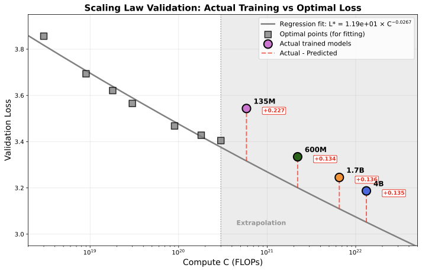
Comparing SODA-base-600M to SODA-prelim-600M (both 600M, 500B tokens) validates that our design choices (English-only data, Yodas+Emilia mixture, 5% Nemotron) yield measurable improvements across all metrics:
We examine how downstream tasks scale, connecting to our NLL correlation analysis (see Correlation section and its figures):
Key takeaway: SODA is the only model with capabilities across all skills — speech understanding, acoustic quality, text knowledge, and cross-modal ASR/TTS — making it a unified foundation for spoken language modeling.
Many discrete audio models (e.g., TWIST, CSM, SpiritLM) initialize from pre-trained text LLMs. Does this warm-start strategy benefit over training from scratch (cold-start)? Specifically, what skills does warm-starting improve or not improve?
We compare warm-start (initialized from Qwen3-0.6B/1.7B-base) versus cold-start (random initialization) at 600M and 1.7B scales, both trained on 500B tokens (same data and recipe as SODA-LongRun).
Link: WandB Log (same group as SODA-LongRun)
A key observation: warm-start exhibits instability with unpredictable loss spikes, while cold-start shows smooth improvement throughout.
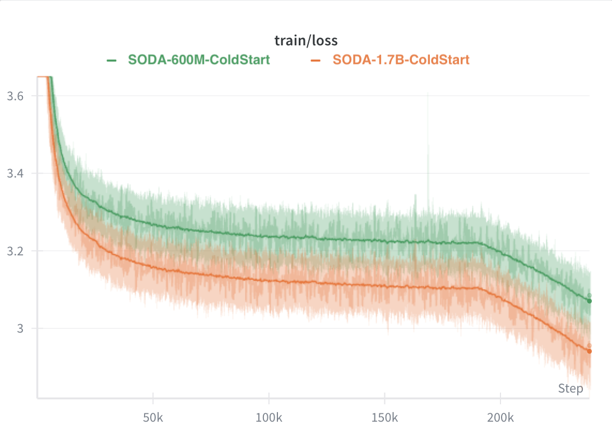
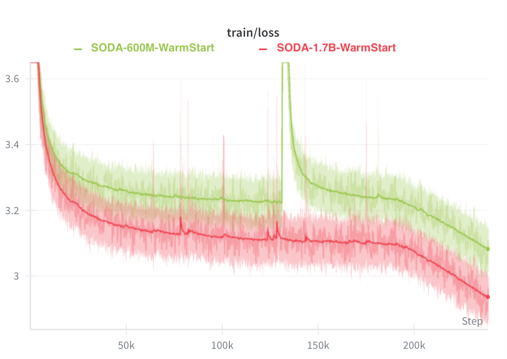
Note: With limited compute budget, we train only one run per configuration. Better regularization or different hyperparameters could potentially stabilize warm-start training.
Full training trajectories comparing warm-start vs cold-start across all metrics:
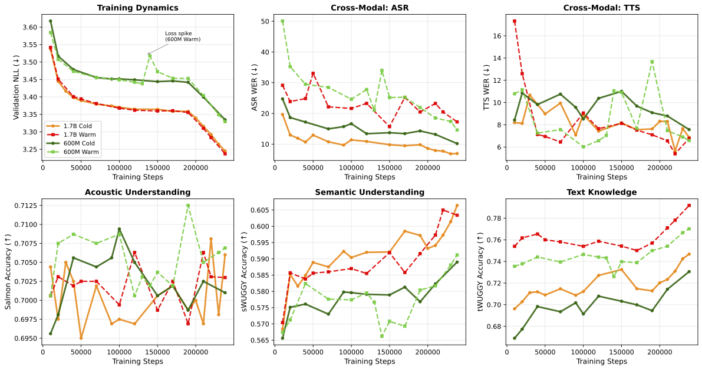
| Model | Speech (Semantic) |
Speech (Acoustic) |
Text (Knowledge) |
Cross-Modal | |||||
|---|---|---|---|---|---|---|---|---|---|
| sBLIMP↑ | sWUGGY↑ | Salmon↑ | tBLIMP↑ | tWUGGY↑ | HellaS↑ | ASR↓ | TTSWER↓ | TTSSIM↑ | |
| 600M Scale | |||||||||
| SODA-600M (cold-start) | 51.2 | 58.9 | 70.1 | 70.7 | 73.1 | 35.8 | 10.2 | 7.6 | 0.555 |
| SODA-600M (warm-start) | 51.1 | 59.1 | 70.7 | 70.8 | 77.0 | 36.3 | 14.6 | 6.6 | 0.559 |
| 1.7B Scale | |||||||||
| SODA-1.7B (cold-start) | 51.4 | 60.6 | 70.6 | 70.3 | 74.7 | 44.5 | 7.0 | 6.9 | 0.560 |
| SODA-1.7B (warm-start) | 51.8 | 60.3 | 70.3 | 71.0 | 79.2 | 47.1 | 17.3 | 6.8 | 0.557 |
Recommendation: We recommend cold-start as the default recipe for general audio capabilities, given the training instability and ASR degradation from warm-starting. However, for applications where complex reasoning or text knowledge is critical, the persistent text-knowledge advantage of warm-start may outweigh these downsides. A hybrid approach (cold-start pre-training followed by text-enriched fine-tuning) is an interesting future direction.
This section is under construction. It will contain open questions and future directions for discrete audio model training.
Placeholder for discussion of: